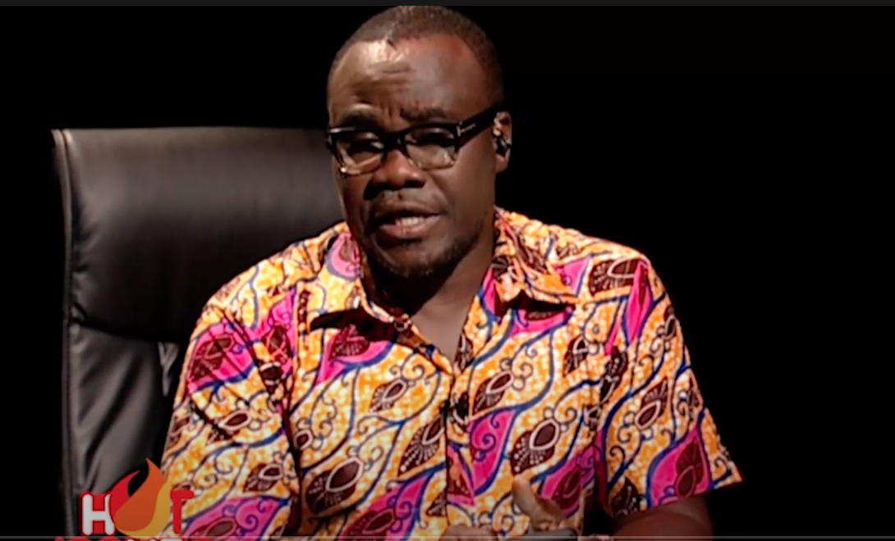
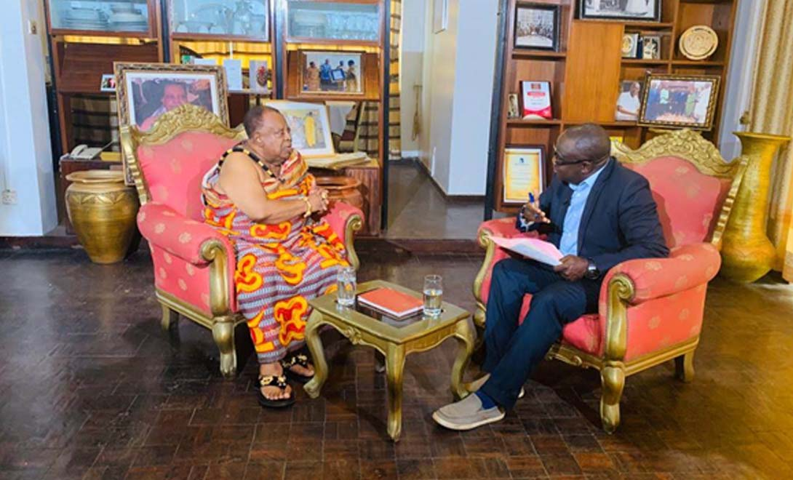
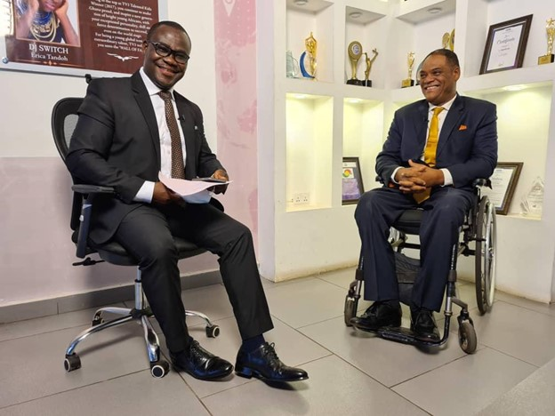
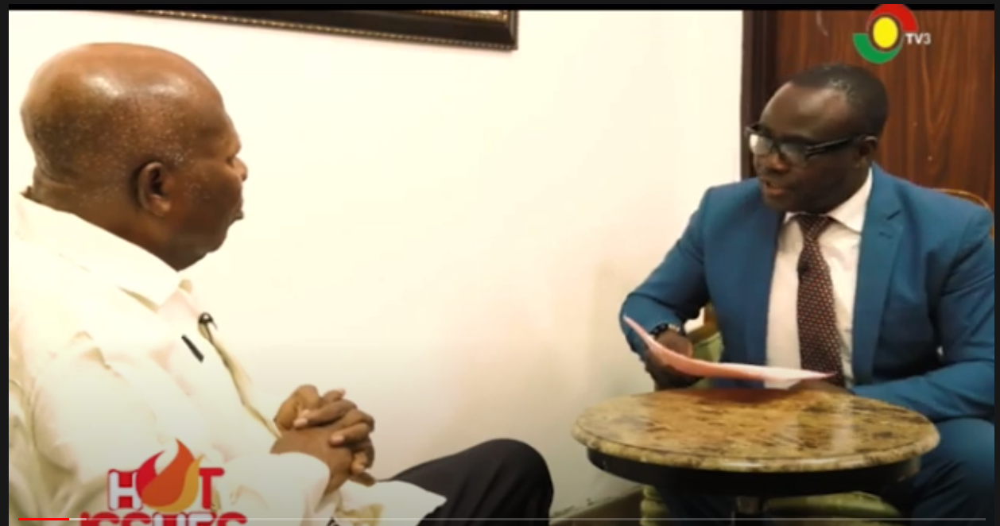
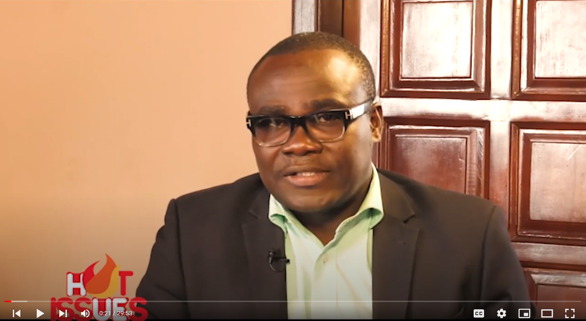

3. HOT ISSUES with Bright Simmons, Vice President, IMANI Ghana discussing the Upward review of the Communications Service Tax in Ghana:
4. Hot issues with Dr. S K B Asante , discussing National Constitutional Day in Ghana:
5. Ghana’s election 2020. One on one with Presidential Candidate of the Convention People’s Party(CPP) Ivor Greenstreet:
6. Hot Issues with Dr. Amoako tuffour on wrangling within the New Patriotic Party of Ghana:
7. Hot issues with Joseph Whittal, Chairman of the Commission on Human Rights and Administrative Justice:
8. Midday live on TV3: https://www.youtube.com/watch?v=kPly8qkjxx4
9. Midday Live: https://www.youtube.com/watch?v=M5Dlv_RMJjM
10. Midday Live: https://www.youtube.com/watch?v=Gyuy0B55r7c
11. Midday Live: https://www.youtube.com/watch?v=BwWIi9CWCEc
12. News @10: https://www.youtube.com/watch?v=uBb1sJ8VIr8&list=PLwjiiFTwes9ryATWCp2DUA9r-O27d18MZ&index=116
13. World Bank Documentary: Street naming: https://www.youtube.com/watch?v=c7RHp8OXxVE&t=2s
14. World Bank Documentary: e-gov: https://www.youtube.com/watch?v=F7kTlcH9n2c&t=1s